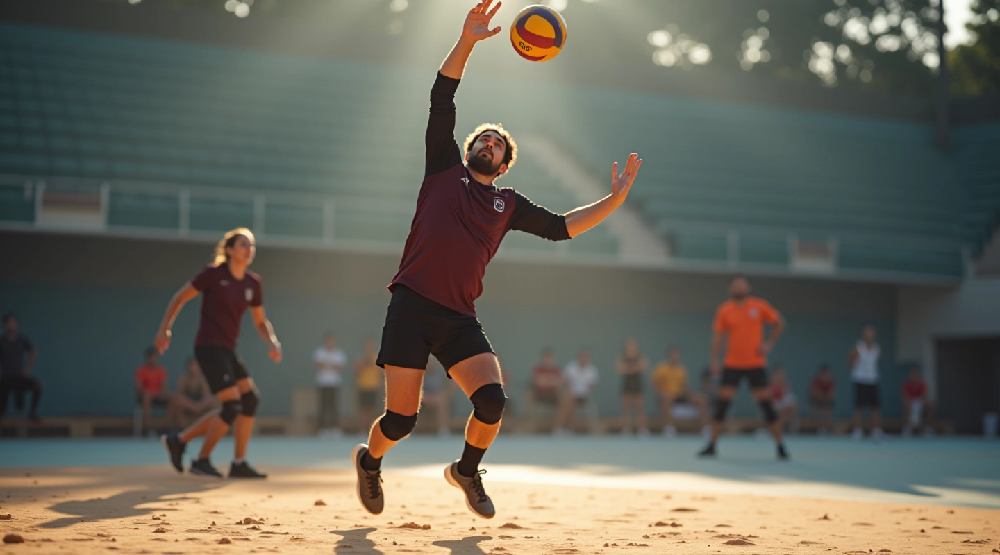
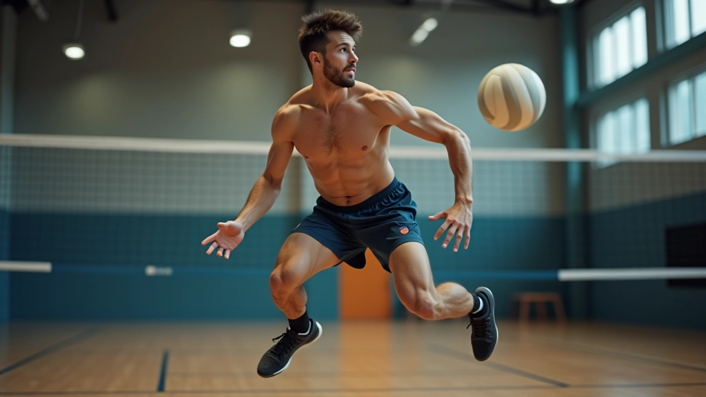
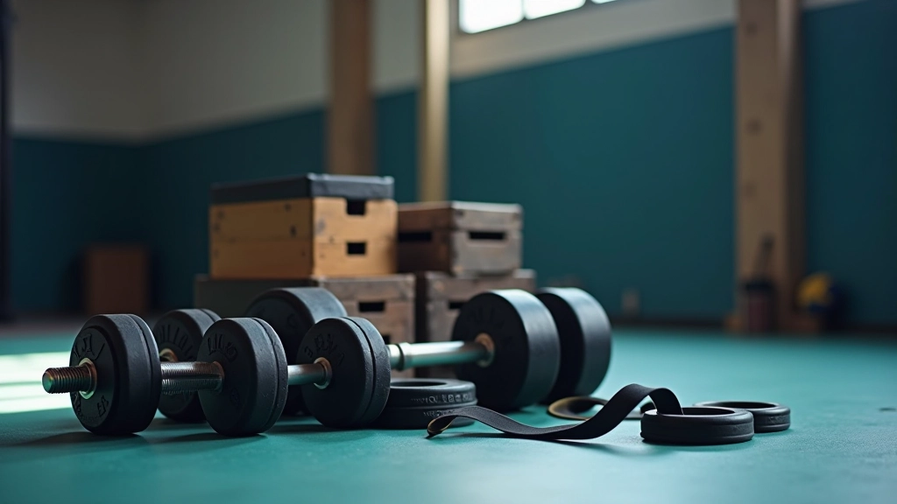
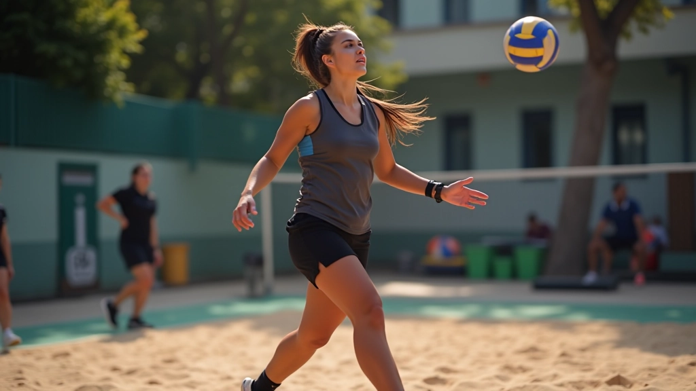
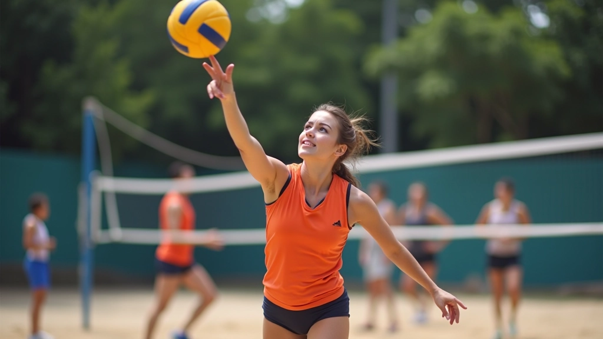
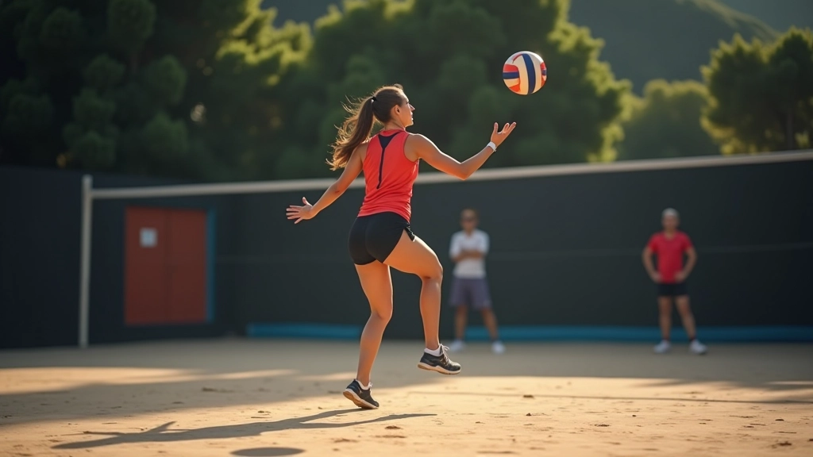

بناء القوة المتفجرة للساقين
اكتشف تقنيات التدريب المثبتة لتطوير قوة انفجارية حقيقية في ساقيك، وتحسين ارتفاع قفزتك وقوة إرسالك بشكل ملموس


فريق تدريب قوة الإرسال
فريق المحتوى التحريري
كتبه فريق تدريب قوة الإرسال التحريري، متخصصون في تقديم إرشادات عملية وموثوقة لتطوير مهارات الإرسال القفزي.
لماذا تعتبر القوة الانفجارية أساسية؟
القوة الانفجارية ليست مجرد كلمة طنانة في عالم الكرة الطائرة — هذه هي الفرق الفعلي بين إرسال ضعيف وإرسال قوي يسجل نقاطاً. عندما تقفز للإرسال، أنت تعتمد على قدرة ساقيك على إطلاق طاقة ضخمة في جزء من الثانية.
نحن نتحدث عن قوة حقيقية هنا. كلا الرجلين معاً يعملان معاً لدفعك للأعلى، وكل ملليمتر إضافي من الارتفاع يعني سرعة أكثر وزاوية أفضل. الأشياء الصغيرة تضيف حقاً.
هذا هو السبب في أن لاعبي الإرسال القفزي الحقيقيين يركزون على تدريب ساقيهم مثل أي شيء آخر. بدون أساس قوي من الساقين، حتى أفضل تقنية في الذراع لن تحقق نتائج حقيقية.


المبادئ الأساسية للتدريب
هناك ثلاثة أشياء أساسية تحتاج إلى التركيز عليها: القوة الأساسية، السرعة، والتكيف. لا يمكنك الحصول على قوة انفجارية حقيقية بدون هذه الثلاثة مجتمعة.
القوة الأساسية
تحتاج ساقاك إلى أساس قوي. نحن نتحدث عن القدرة على رفع وزن ثقيل نسبياً. هذا هو البناء الأولي.
السرعة والحركة
بعد بناء القوة، تحتاج إلى تطوير القدرة على إطلاق تلك القوة بسرعة. هذا ما يصنع الفرق الحقيقي.
التكيف الدوري
تجنب الهضاب من خلال تغيير تدريبك كل 3-4 أسابيع. جسمك يتكيف بسرعة مع نفس الروتين.
خطة التدريب العملية
إليك ما يعمل فعلاً. ليست هذه نظرية — هذه أشياء جربها لاعبون حقيقيون.
الأسابيع 1-3: بناء الأساس
ركز على تمارين القوة الثقيلة. تمارين السكوات، الرفعات الميتة، والطعنات. 3 مجموعات من 6-8 تكرارات. الهدف هو بناء عضلات قوية وقادرة على التعامل مع الحمل.
الأسابيع 4-6: تطوير السرعة
الآن أضف تمارين بليومترية. قفزات صندوقية، قفزات مربعة، قفزات على ساق واحدة. ركز على السرعة والتفجير. القوة التي بنيتها ستخرج الآن بسرعة.
الأسابيع 7-8: التكامل والاختبار
ادمج كلا النوعين معاً. قم بحركة ثقيلة واحدة يومياً، ثم تمارين بليومترية. هذا هو عندما ترى النتائج الحقيقية — قفزات أعلى، ارتفاع أفضل في الإرسال.
تقنيات التدريب الأساسية
لا تحتاج إلى صالة رياضية معقدة أو معدات متطورة. الأشياء البسيطة تعمل بشكل أفضل. إليك ما نوصي به:
تمارين القفز الأساسية
القفزات العميقة: أسقط نفسك من ارتفاع منخفض وقفز للأعلى مباشرة. تطور هذا الانتقال من الانكماش إلى التوسع — بالضبط ما تحتاجه للإرسال. ابدأ بـ 3 مجموعات من 5 قفزات.
يعمل هذا لأنه يعلم عضلاتك أن تخزن الطاقة ثم تطلقها بسرعة. إنه تقليد مباشر لما يحدث عندما تهبط وتنطلق للقفز عند الإرسال. تجنب الإفراط في هذا — 2-3 مرات في الأسبوع كافية.
التغذية والتعافي
التدريب الثقيل يدمر العضلات. يجب أن تعطيها ما تحتاجه لإعادة البناء أقوى.
البروتين
1.6-2 غرام لكل كيلوغرام من وزن الجسم يومياً. هذا هو البناء الأساسي. بدون كمية كافية من البروتين، لن تنمو العضلات.
الكربوهيدرات
تناول الكربوهيدرات قبل التدريب بـ 2-3 ساعات. هذا يعطيك الطاقة للقيام بتمارينك بقوة. بدونها، ستشعر بالضعف.
الراحة
النوم أهم من أي شيء. هذا هو عندما يحدث الإصلاح الفعلي. 7-9 ساعات كل ليلة. بدون نوم كافٍ، لن تحرز تقدماً.
نصائح عملية لتسريع التقدم
التدرج بحكمة: لا تضيف وزناً أو صعوبة بسرعة كبيرة. زيادة الحمل بنسبة 5% فقط كل أسبوع أو اثنين. هذا يقلل الإصابات ويجعل التقدم مستقراً.
تتبع حركاتك: احتفظ بسجل بما تفعله. كم وزن رفعت؟ كم قفزة قفزت؟ كم ارتفعت؟ التقدم المقاس هو التقدم الحقيقي.
الإحماء مهم حقاً: 5-10 دقائق من الحركة الخفيفة قبل التدريب الثقيل. هذا يحضر عضلاتك ويقلل خطر الإصابة.
استمع لجسدك: الألم ليس ضعفاً يتركه يخرج. إذا أصابك شيء ما، خذ يوماً راحة. من الأفضل تخطي جلسة واحدة بدلاً من الإصابة بإصابة تستمر لأسابيع.
اختبر نفسك كل 4 أسابيع: كم عالياً يمكنك أن تقفز الآن؟ كم وزناً يمكنك رفع؟ هذا يثبت أن تدريبك يعمل.
الخلاصة: ابدأ اليوم
بناء قوة انفجارية حقيقية في ساقيك لا يحدث بين عشية وضحاها. يستغرق الأمر حوالي 6-8 أسابيع من التدريب المتسق لرؤية نتائج ملموسة. لكن عندما تبدأ في القفز أعلى وإرسالك يصبح أقوى بكثير، ستعرف أن الوقت كان يستحق كل ثانية.
المفتاح هو الاتساق والصبر. اتبع الخطة، اطعم جسدك بشكل صحيح، احصل على نوم كافٍ. لا تحاول أن تفعل كل شيء دفعة واحدة. ركز على المبادئ الأساسية، ولاحظ كيف يتحسن جسدك تدريجياً.
أنت تستطيع أن تفعل هذا. آلاف اللاعبين الآخرين يفعلون ذلك. كل ما تحتاجه هو الالتزام والعمل الشاق. ابدأ غداً، أو ابدأ الآن. الوقت الوحيد الذي تأسف عليه هو الوقت الذي كنت تستطيع فيه البدء ولم تفعل.
إخلاء المسؤولية التعليمي
هذا المحتوى مخصص للأغراض التعليمية والمعلوماتية. تختلف نتائج التدريب الفردي من شخص لآخر بناءً على العوامل الوراثية والالتزام والتدريب السابق. نوصي باستشارة مدرب معتمد أو متخصص في الرياضة قبل البدء في أي برنامج تدريب جديد، خاصة إذا كان لديك إصابات سابقة أو حالات طبية.
مقالات ذات صلة

تقنيات الإرسال القفزي للمبتدئين
تعلم الخطوات الأساسية والوقفة الصحيحة لإتقان الإرسال القفزي من البداية بطريقة آمنة وفعالة.
اقرأ المزيد
التوازن والاستقرار في الإرسال
اكتشف كيفية تحسين توازنك واستقرارك أثناء الإرسال لضمان أداء متسق وموثوق.
اقرأ المزيد
تجنب الإصابات الشائعة
تعرف على الإصابات الشائعة في الإرسال القفزي وكيفية الوقاية منها بفعالية.
اقرأ المزيد